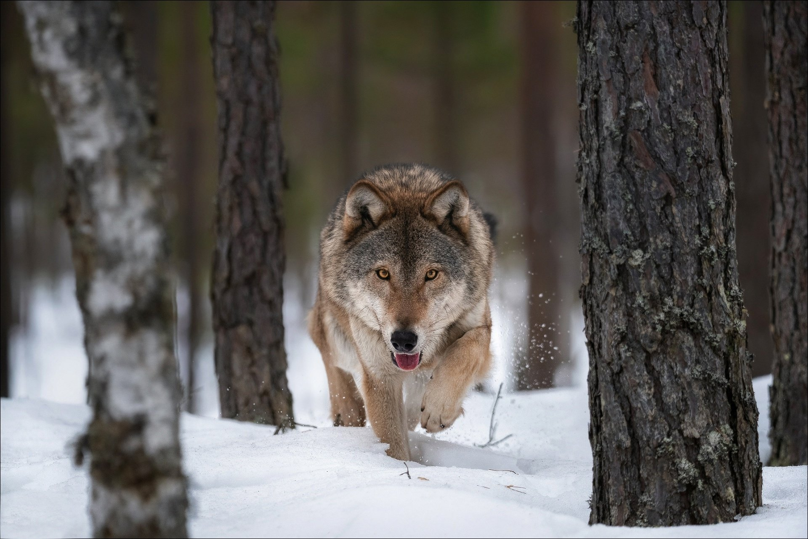

Lobo

O lobo-cinzento é o maior membro remanescente da família Canidae e alguns estudos apontam que ele é um ancestral do cão doméstico.
São encontrados principalmente na Europa, Ásia e América, em regiões frias. Eles podem pesar até 80 quilos, medir 85 cm de altura e atingir até 70 km/h.
Como um animal carnívoro, sua alimentação é composta de javalis, cervos, veados e alces.
As incríveis garras, presas, visão noturna, audição sensível e velocidade proporcionam sua excelente habilidade de caça.
Leão

o terceiro animal da lista se distância do ambiente aquático e surge como o rei da selva. Os leões são animais carnívoros e capazes de abater as maiores presas da natureza.
Além disso, eles podem atingir velocidades de até 50 km/h, não sendo fácil para suas presas fugirem desse grande predador.
Eles podem ser encontrados em regiões da África e da Ásia. Os leões e as leoas costumas caçar e podem predar animais como zebras, hienas, veados, búfalos e javalis.
Os leões se diferenciam das fêmeas por possuírem maior porte e uma vasta juba com maior quantidade de pelos. Eles podem pesar 190 quilos e atingir até 1,2 metros de altura